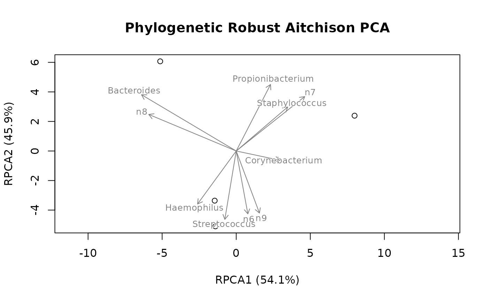

Robust Aitchison PCA (rpca()) of a count table expanded to every node of
a phylogenetic tree: each node's count is the total of the tips below it,
weighted by its branch length. Clades that change together then act as
one feature, and the result is a compositional counterpart of a UniFrac
PCoA, with loadings for every clade. This is gemelli's
phylogenetic_rpca() (Martino et al. 2022), QIIME 2's
gemelli phylogenetic-rpca.
Usage
rpca_phylo(
counts,
tree = NULL,
margin = 1L,
n_axes = 3L,
max_iters = 5L,
tol = 1e-05,
min_sample_count = 0,
min_feature_count = 0,
min_feature_frequency = 0,
min_depth = 0L,
distances = FALSE,
node_counts = FALSE,
cpus = n_cpus()
)Arguments
- counts
A numeric matrix of count data (samples \(\times\) features), or any of the other objects listed in "Input Types". Values must be finite and non-negative; they need not be integers. The features are the tips of
tree.- tree
A
phyloobject whose tips include every feature ofcounts(seeread_tree()). Its branch lengths must be non-negative; missing ones (NA) count as 0. Its root length,tree$root.edge, only counts if the root is left with a single child (see "Method"). Can be omitted if a tree is embedded with thecountsobject or asattr(counts, 'tree').- margin
The margin containing samples.
1if samples are rows,2if samples are columns. Ignored whencountsis a special object class (e.g.phyloseq). Default:1- n_axes
The rank of the low-rank model, which is also the number of axes returned: a whole number from 1 to 10. Default:
3- max_iters
The largest number of OptSpace gradient descent iterations; fewer are run if
tolis reached first. More is not better: see "Iterations". Default:5- tol
Stop early once the root mean squared error of the fit to the (rescaled) observed values falls below
tol. Default:1e-5- min_sample_count
Drop samples whose total count (after the feature filters) is not above this. Default:
0- min_feature_count
Drop tips whose total count is not above this. Default:
0- min_feature_frequency
Drop tips that are non-zero in no more than this percentage of samples (0 to 100). Default:
0- min_depth
Drop the internal nodes that have at most this many tips with counts below them (gemelli's
min_depth). Tips are always kept. The default,0, keeps every node.- distances
If
TRUE, also return gemelli's distances between samples, as adistobject in attributedm. See "Distances" below. Default:FALSE- node_counts
If
TRUE, also return the count of every node in every sample (the total of its tips' counts, not weighted by branch length) in attributenode_counts. Default:FALSE- cpus
How many parallel processing threads should be used. The default,
n_cpus(), is the CPU cores this R process may use, within any limits set on it. Results are the same for anycpus.
Value
A numeric matrix with one row per kept sample and one column per
axis, named "RPCA1", "RPCA2", etc., with the same attributes as
rpca()'s (see "Ordination result" below), except that:
methodis"rpca_phylo".loadingshas one row per node of the tree that is used: the tips, named by their labels, and the internal nodes, named"n<id>"as gemelli names them (see "Method").tree: the tree that was used, as aphyloobject:treecut down to the tips with counts, with nodes merged and removed as described in "Method", and with internal nodes labelled with the names used inloadings, so that loadings can be drawn on it. Its root length, if not 0, is inroot.edge.node_counts: Only withnode_counts = TRUE. The node counts, with one row per kept sample and one column per node (in the order ofloadings): a sparsedgCMatrixif the Matrix package is installed, else a base matrix.
Details
Method
Filtering. The tips (features) and samples are filtered exactly as by
rpca(), except that samples with a single non-zero tip are kept: they have counts on that tip's ancestors too.The tree. The tree is cut down to its root, the tips with counts after filtering, and their ancestors. A node left with a single child is merged into it, adding its branch length to the child's. The root has no length (gemelli drops it), unless it is left with a single child: then the two become one node, the root, whose length is the child's (after the merges above) plus the root length,
tree$root.edge(trees fromread_tree()have none). Then, withmin_depthabove 0, each internal node with at mostmin_depthtips below it is removed, and its tips are attached, in order, after its parent's other children.Node table. Each node's count in a sample is the total count of the tips below it (a tip's is its own count). Internal nodes are numbered as scikit-bio's
TreeNode.assign_ids()numbers them: visiting the nodes in postorder, each node's children are numbered in turn, and the root last; they are namednfollowed by that number (from 0). The columns of the node table, and the rows ofloadings, are in this order.Robust clr with branch lengths. For each sample, the log of each node's count times its branch length, minus their mean over the sample's observed entries. An entry is observed when both the count and the branch length are positive. So a node with length 0 (such as the root, usually) is a feature with no observed values, which still counts in OptSpace's scaling and in the final centering, and has loadings. A sample whose observed values are all equal (for example one with a single tip, whose path to the root has branches of equal length) has a robust clr of 0 throughout, and has no observed values: as in gemelli, its position only reflects the other samples.
Matrix completion and PCA, exactly as
rpca().
rpca_phylo() can also be run as count_ord(counts, 'rpca_phylo', tree = tree).
Speed and memory
The node table is never formed densely: each sample's node counts are
summed from its non-zero tips, in parallel, and the rest runs as for
rpca(), whose "Speed and memory" notes apply with the nodes as
features. The tree is processed in time proportional to its size. Results
are identical from run to run and for any number of cpus.
Differences from gemelli
rpca_phylo() is a port of gemelli.rpca.phylogenetic_rpca() (gemelli
0.0.13), with the tree handling of iow 1.0.8 and scikit-bio 0.7.4 that it
calls. On the package's test tables (including gemelli's test tree),
the node counts are the same and the results agree with gemelli's to
within \(2 \times 10^{-14}\) (relative). The differences are those of rpca()
(its "Differences from gemelli" section: max_iters is used where gemelli
ignores max_iterations and always runs 5 iterations, n_axes may be 1,
axes of rounding-error variance are dropped, eig and the scores are
scaled as pca()'s), and these:
gemelli converts counts to whole numbers (64-bit integers) before summing them up the tree, so proportions become zeros.
rpca_phylo()uses the counts as given.Samples with a single non-zero tip are kept, as gemelli keeps them (unlike
rpca(), which drops samples with a single non-zero feature).gemelli's OptSpace treats any robust clr value that is exactly 0 as missing, which depends on rounding. Here an entry is missing exactly when its count or its branch length is 0, or when all of its sample's values are equal.
The root length is
tree$root.edge. ape'sread.tree()keeps a Newick root length there, but ecodive'sread_tree()discards it. It only matters when the root is left with a single child: then, for a tree read byread_tree(), the merged root's length lacks the root length that gemelli, reading the same Newick file, would add.Internal node labels in
treeare replaced by then<id>names, as gemelli does; gemelli's optional taxonomy output is not provided.
Sequencing depth
rpca() is not a correction for uneven sequencing depth. The robust clr
divides each sample by the geometric mean of its own non-zero counts, so
scaling a sample's counts changes nothing; but a deeper sample has more
non-zero features, so which values are missing (the zeros that OptSpace
completes) depends on depth, and depth can reach the result that way
(an inference from the method, not a measured effect). Schloss (2026)
corrected "numerous problems" in the benchmark that had supported robust
Aitchison PCA and found that it "was not insensitive to uneven
sequencing effort and did not perform as well as rarefaction" (see also
Schloss 2024).
To check a result, correlate its axes with log library size, fit library
size onto it with envfit() (\(r^2\) and a permutation p-value), and
compare it with an ordination of rarefied data from
beta_div_rarefied(), here rarefied to the smallest library so that no
sample is dropped:
depth <- rowSums(counts)
ord <- rpca(counts)
cor(ord, log(depth[rownames(ord)])) # per axis
envfit(ord, data.frame(log_depth = log(depth)))
dm_rar <- beta_div_rarefied(counts, 'robust_aitchison', depth = min(depth))
ord_rar <- pcoa(dm_rar, n_axes = 2)
procrustes_test(ord_rar, ord)Ordination result
Every ordination function (pcoa(), pca(), rpca(), dbrda(), capda(),
capscale(), mds(), nmds(), isomap(), tsne(), umap(), and so
dist_ord()) returns the same kind of
object: a numeric matrix with one row per sample and one column per
axis, so that it can go straight into a data frame. Rows are
named after the samples, when the input has names. Columns are named
after the method: "PCoA1", "PC1", "RPCA1", "dbRDA1" or "CAP1"
(then "MDS1" for unconstrained axes), "MDS1", "NMDS1",
"Isomap1", "TSNE1", "UMAP1", and so on.
Its attributes always begin with these three, in this order, each with one value per column:
method: The method's ID, e.g."pcoa"or"nmds".eig: Each axis's eigenvalue, on the method's own scale:pcoa()andisomap()give the eigenvalues of Gower's centered matrix (sums of squares);pca()andrpca()give variances, which arepcoa()'s divided by \(n - 1\) for \(n\) samples; anddbrda()andcapscale()followvegan, which also divides by \(n - 1\) when any distance is 4 or more.NAformds(),nmds(),tsne(), andumap(), which have no eigenvalues.prop: The proportion of the total variance (or inertia) that each axis explains. Unlikeeig, it is comparable between methods, so use it to label axes.NAwhere it isn't defined.
Attributes particular to the method follow them, and last display,
with the ordination's title for plot() and print(): the method's
name, and for the methods that take distances, the distance matrix's
title, such as "Principal Coordinates Analysis of Bray-Curtis
Dissimilarity" (see ecodive_display). The matrix has class
"ecodive_ord" (as well as "matrix"), so that print() lists the
other attributes by name rather than in full, and plot() draws the
samples on the first two axes, labelled from the attributes, with any
loadings, constraints and centroids on top (see plot.ecodive_ord()).
plot(ord, "Species", iris) colours the samples by a column of
metadata. Subsetting with [, or as.data.frame(), gives a plain
matrix or data frame without the attributes.
Input Types
The counts parameter is designed to accept a simple numeric matrix, but
seamlessly supports objects from the following biological data packages:
phyloseqrbiomSummarizedExperimentTreeSummarizedExperiment
For large datasets, standard matrix operations may be slow. See
vignette('performance') for details on using optimized formats
(e.g. sparse matrices) and parallel processing.
References
Martino, C., McDonald, D., Cantrell, K., Dilmore, A. H., Vázquez-Baeza, Y., Shenhav, L., Shaffer, J. P., Rahman, G., Armstrong, G., Allaband, C., Song, S. J., & Knight, R. (2022). Compositionally aware phylogenetic beta-diversity measures better resolve microbiomes associated with phenotype. mSystems, 7(3), e00050-22. doi:10.1128/msystems.00050-22
Martino, C., Morton, J. T., Marotz, C. A., Thompson, L. R., Tripathi, A., Knight, R., & Zengler, K. (2019). A novel sparse compositional technique reveals microbial perturbations. mSystems, 4(1), e00016-19. doi:10.1128/mSystems.00016-19
Martino, C. (2019). gemelli (Python package, version 0.0.13). BSD 3-Clause License. https://pypi.org/project/gemelli/
Schloss, P. D. (2026). Rarefaction is better than robust Aitchison PCA and other compositional data analysis methods at controlling for uneven sequencing effort. mSystems, 11, e00930-26. doi:10.1128/msystems.00930-26
Schloss, P. D. (2024). Rarefaction is currently the best approach to control for uneven sequencing effort in amplicon sequence analyses. mSphere, 9, e00354-23. doi:10.1128/msphere.00354-23
See also
rpca(), the same without a tree; count_ord(); the UniFrac
family (unweighted_unifrac(), weighted_unifrac(), ...), the
phylogenetic distances whose compositional counterpart this is;
read_tree().
Examples
ord <- rpca_phylo(ex_counts, ex_tree, n_axes = 2)
ord
#> # A matrix: 4 samples × 2 axes
#> # Phylogenetic Robust Aitchison PCA
#> # % of variance: 54.1, 45.9
#> RPCA1 RPCA2
#> Saliva -1.45 -3.36
#> Gums -1.4 -5.1
#> Nose 7.99 2.39
#> Stool -5.13 6.07
#> # Attributes: method, eig, prop, trace, loadings, cost, n_iters, tree
plot(ord)

str(ord)
#> 'ecodive_ord' num [1:4, 1:2] -1.45 -1.4 7.99 -5.13 -3.36 ...
#> - attr(*, "dimnames")=List of 2
#> ..$ : chr [1:4] "Saliva" "Gums" "Nose" "Stool"
#> ..$ : chr [1:2] "RPCA1" "RPCA2"
#> - attr(*, "method")= chr "rpca_phylo"
#> - attr(*, "eig")= num [1:2] 31.4 26.6
#> - attr(*, "prop")= num [1:2] 0.541 0.459
#> - attr(*, "trace")= num 58
#> - attr(*, "loadings")= num [1:11, 1:2] -0.2256 -0.5526 -0.0665 0.3005 0.256 ...
#> ..- attr(*, "dimnames")=List of 2
#> .. ..$ : chr [1:11] "Haemophilus" "Bacteroides" "Streptococcus" "Staphylococcus" ...
#> .. ..$ : chr [1:2] "RPCA1" "RPCA2"
#> - attr(*, "cost")= num [1:6] 0.459 0.452 0.448 0.445 0.443 ...
#> - attr(*, "n_iters")= int 5
#> - attr(*, "tree")=List of 5
#> ..$ edge : int [1:10, 1:2] 7 8 8 7 9 10 10 9 11 11 ...
#> ..$ edge.length: num [1:10] 2 44 68 11 12 18 11 12 24 13
#> ..$ Nnode : int 5
#> ..$ tip.label : chr [1:6] "Haemophilus" "Bacteroides" "Streptococcus" "Staphylococcus" ...
#> ..$ node.label : chr [1:5] "n10" "n8" "n9" "n6" ...
#> ..- attr(*, "class")= chr "phylo"
#> ..- attr(*, "order")= chr "cladewise"
#> - attr(*, "display")=List of 1
#> ..$ title: chr "Phylogenetic Robust Aitchison PCA"
# Loadings for clades as well as tips.
head(attr(ord, 'loadings'))
#> RPCA1 RPCA2
#> Haemophilus -0.22556892 -0.31005590
#> Bacteroides -0.55260451 0.32926470
#> Streptococcus -0.06651394 -0.40030940
#> Staphylococcus 0.30050073 0.25748492
#> Corynebacterium 0.25598980 -0.05450604
#> Propionibacterium 0.20032445 0.38907786